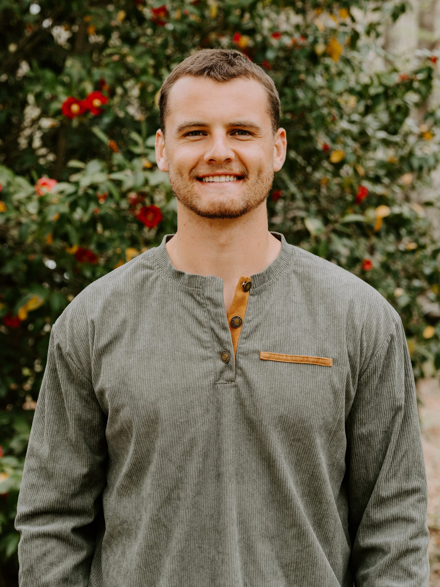

How I got here.
I grew up in Leesburg, Virginia in a home that honored Christian values and never let me go without. But for most of my younger years, I was completely ignorant of what it actually meant to walk with God. I knew about Jesus the way you know about a historical figure. Facts, stories, a general familiarity. But I had never been discipled. I had never truly encountered Him.
When my sister got very sick during my middle school years, life looked different for our family almost overnight. It was around that time that I became increasingly independent and started dreaming about what I actually wanted. I loved sports, I had an interest in business, and people had told me since I was young that I was a natural leader, though I never truly understood what that meant. I threw myself into basketball with one goal: play in college.
I wasn't following Jesus then, but looking back, I can see the seeds being planted. I distinctly remember one practice our FCA coach asking us to pull out a piece of paper and write down our why. Why are you here? Why are you on this team? I wrote: "To be a part of something bigger than myself." Deep down, I knew there was something bigger than me.
My junior year Covid hit and I watched my dreams of playing college basketball quietly disappear. I enrolled at Northeastern University in Boston to study Data Science and Finance, and I walked through those doors with my eyes fixed on money and climbing the ladder of success. My first year I quickly found myself unsatisfied and lacking purpose.
I returned to Virginia that summer and sat down with a family friend who shared about his time serving in an elite military role during the war on terror. Those conversations lit something on fire inside me. I spent the rest of that summer reading everything I could about that conflict and that region of the world. I had close friends who were Muslim, people I loved deeply, and as I began to see the weight of the brokenness and pain at work in the world, I started asking very deep questions. By the end of the summer, I wanted to join the military. Not because I believed it was the answer, but because it was the only path I could see toward doing something about the darkness I saw. I began training to enlist. Yet as time passed I found myself growing bitter and empty.
By my junior year of college, I was completely lost.
I couldn't relate to my peers. Most days I was filled with a low, quiet anger. The brokenness I saw in the world felt suffocating and I had no idea what to do with it. I'll never forget the weight of that first week of January 2024. I was working a part-time job, carrying a full course load, holding a leadership position on campus, training for a jiu-jitsu competition, and filling out a Marine contract application. By every measurable standard, I was succeeding. And I cried myself to sleep every single night that week.
I felt like a truck that had hit empty, flooring the gas with nothing left in the tank. That Friday, I fell to my knees and cried out to God. I hadn't prayed a genuine prayer in years. I didn't own a Bible. I wasn't going to church. But I prayed a simple, desperate prayer of surrender:
"God, I have been building my own kingdom for far too long. I am done. Tear down everything I have built and build Your kingdom in my life."
From that day forward, everything changed. God gave me new eyes. He began to humble and break the version of me that had been exalted for so long. I started going to sleep with a smile on my face, walking in a joy and peace I had never known. For the first time in my life, I wasn't just hearing about Jesus. I was beginning to know Him.
That summer, a friend named Andrew invited me on a mission trip to Zambia with Freedom House International. I said yes, not fully knowing what I was stepping into. What I found on the other side was something I was not prepared for.
I spent a month watching the power of the gospel shatter every box I had ever tried to put God in. I watched people encounter Jesus in ways that defied explanation. I experienced what it meant to be in daily community around worship, prayer, evangelism, and scripture; to be discipled, and to disciple others. It was the first time in my life I understood what the Christian life was actually supposed to look like.
One day in particular I will never forget. I found myself standing inside a prison cell with men who had been involved in violent crimes. Many were bitter, staring at the ground, openly confessing they planned to shed blood the moment they were released. The Holy Spirit spoke through me and shared the grace of God with them. By the time we walked out, their faces were completely transformed. They were on their feet, shouting praises to God, clapping with everything they had.
In that moment, I knew. No work could compare to this.
I finished my degree, went on a second mission trip with FHI, and watched the Lord continue to strip away everything I was still clinging to. He also began revealing something I could not ignore; the calling of every disciple to go to the ends of the earth and make more disciples. The Great Commission was not a suggestion. It was an invitation I was beginning to take personally.
It was around this time that I read Living Fearless by Jamie Winship, the story of a man used by God to bring peace in some of the most dangerous corners of the world, watching the power of God work in places where human effort had long failed. As I read, something clicked.
The burning I had felt to join the military, it was always a calling to fight evil. But the weapons of our warfare are not of the flesh. They are mighty in God for pulling down strongholds (2 Corinthians 10:4). Jesus is, and has always been, the only answer. Not just for me. For everyone. My vision was becoming clear. My steps, not quite yet.
Then Andrew called. He told me about a discipleship school the ministry was running; a nine-month program centered on deep discipleship and equipping for ministry, followed by three months overseas leading short-term mission teams. I said yes. That season was foundational to everything. I learned how to walk in true community, how to pray and lead from God's presence, how to search the scriptures with genuine hunger. I experienced firsthand what it looks like when a group of people are fully committed to knowing God and sharpening one another. And most importantly, I learned to hear God's voice.
At the end of my time at that school, I received an invitation to join staff at FHI to help build the ministry's data infrastructure and to work toward establishing new ministry partnerships in the Middle East.
I prayed. I sought counsel. I went to the scriptures. And everything I heard from the Lord was a resounding yes. I believe God has brought me here for a purpose far greater than anything I could have built on my own. An eternal purpose. A kingdom purpose. I am overwhelmed by His love and mercy that He would not only save me from the emptiness I was living in, but call me, equip me, and trust me to be used for His work.
My deepest prayer is simple: that I would know Him more, that those around me would know Him more, and that He would be glorified through my life.